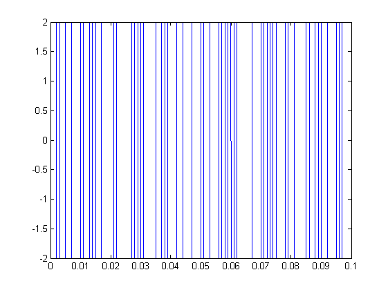
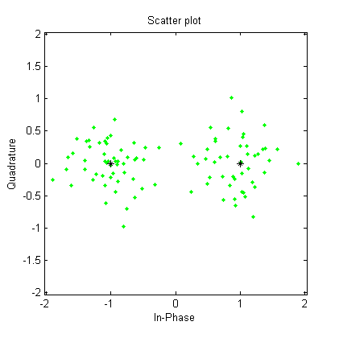

sample_size = 100;
bit_sequence = randi([0 1], [1 sample_size]);
source_encoded_sequence = bit_sequence;
word_length = 1;
constellation = exp(1i*2*pi*(0:(2.^(word_length)-1))/(2.^word_length));
constellation_elements = length(constellation);
source_encoded_sequence = [source_encoded_sequence, zeros(1, mod(sample_size, word_length))];
words = reshape(source_encoded_sequence, word_length, [])';
symbols = bi2de(words);
bit_rate = 1000;
symbol_rate = bit_rate/word_length;
samples_per_symbol = 100;
sampling_rate = samples_per_symbol*symbol_rate;
t = 0:(1/sampling_rate):(length(words)/symbol_rate)- (1/sampling_rate);
pulse_t = [ones(1,samples_per_symbol), zeros(1, length(t)-samples_per_symbol)];
modulated_baseband = zeros(1, length(t));
for i = 1:length(t)
last_element = mod(i, samples_per_symbol);
if last_element == 0
last_element = samples_per_symbol;
end;
pulse_sequence = pulse_t(i:-samples_per_symbol:last_element);
modulation_coefficients = constellation(symbols + 1);
modulated_baseband(i) = sum(modulation_coefficients(1:length(pulse_sequence)).*pulse_sequence);
end
f_c = 0;
modulated_signal = 2.*real(modulated_baseband.*exp(1i*2*pi*f_c*t));
figure, plot(t,modulated_signal);
EbNo = 5;
snr = EbNo + 10*log10(word_length) - 10*log10(samples_per_symbol);
recieved_signal = awgn(modulated_baseband, snr, 'measured');
recieved_symbols = zeros(length(words), 1);
for i = 1:length(words)
recieved_symbols(i,1) = sum(recieved_signal((((i-1)*samples_per_symbol) + 1):i*samples_per_symbol))./samples_per_symbol;
end
constellation_diagram = scatterplot(recieved_symbols, 1, 0, 'g.');
hold on
scatterplot(modulated_baseband, 1, 0, 'k*', constellation_diagram);
 